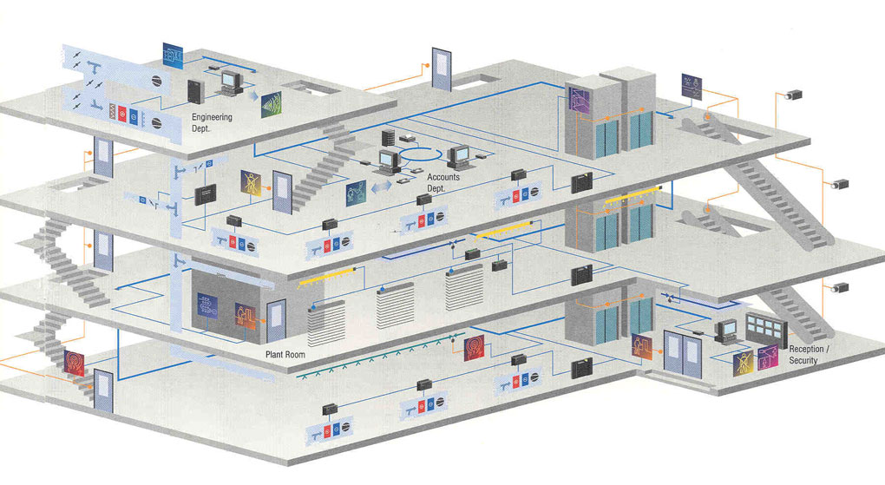

نگاهی گذرا به نمونههایی از قابليت های سيستم خانه هوشمند:
فرمان دادن به سیستم هوشمند از طریق LCD لمسی، ریموت کنترل و صفحه کلیدها، از هر نقطه منزل.
تنظیم خودکار شدت نور با توجه به میزان نور آفتاب.
اجرای سناریوهای روشنایی برای حالتهایی مانند خواب شبانه، ورود مهمان، مسافرت، خروج از منزل، نمایش فیلم و .....
برنامه ریزی سیستم روشنایی برای زمانهای عدم حضور افراد در اتاق.
اطمینان از روشن نبودن لامپهای اضافی با کمک LCD لمسی یا ریموت.
امکان کنترل و تغییر در وضعیت روشنایی منزل در هنگام سفر.
روشن کردن سیستم سرمایش-گرمایش پیش از رسیدن به منزل یا ویلا.
تغییر دمای محیط منزل با توجه به تغییرات دمای محیط بیرون
فعالسازی سیستم با استفاده از ریموت کنترل، LCD لمسی.
برنامه ریزی سیستم سرمایش-گرمایش برای روشن یا خاموش شدن در ساعات معینی از روز.
خاموش شدن سیستم گرمایش- سرمایش در صورت عدم حضور فرد در اتاق.
امکان کنترل دمای آب استخر.
مشاهده و کنترل وضعیت کلیه تجهیزات الکترونیکی موجود در منزل.
جایگزینی تمام ریموت کنترلهای موجود در منزل با یک ریموت کنترل.
کنترل و برنامه ریزی هوشمند سیستم آبیاری گیاهان.
استفاده از پرده های برقی و کنترل پرده ها با استفاده از ریموت کنترل، LCD لمسی
اجرای سناریوی بیدار شدن از خواب با افزایش تدریجی نور لامپها، پخش موسیقی مورد علاقه در محیط اتاق، بالارفتن پردهها و روشن شدن سیستم گرمایش-سرمایش با برنامه ریزی از پیش تعیین شده.
استفاده از iPad، iPhone، iPod (محصولات شرکت Apple) برای کنترل خانه هوشمند »فعال شدن سیستم امنیتی با استفاده از ریموت کنترل و LCD لمسی و یا به صورت خودکار در هنگام خروج از منزل.
امکان کنترل حسگرهای حرکتی موجود در سیستم امنیتی از طریق LCD لمسی.
کنترل و مشاهده تصاویر دوربین های امنیتی از طریق LCD لمسی، iPad، iPhone ،iPod و تلویریون.
امکان انتقال بیسیم موسیقیهای مختلف به فضاهای متعدد منزل و پخش همزمان موسیقی در چندین فضا
قابلیت ذخیره سازی فیلم و طبقه بندی آنها بر اساس موضوع، نام، کارگردان و ....
قابلیت ذخیره سازی موسیقی و سایر فایلهای صوتی و طبقه بندی آنها بر اساس موضوع، نام خواننده و ....